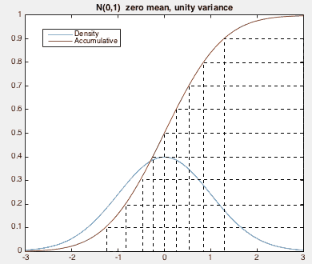

The normal or Gaussian distribution is an important probability density
function (pdf) most commenly used to model a random variable of unknown
distribution due to two of its properties:
- The central limit theorem
- The maximization of entropy
The proof of the second property will be given later.
The univariate normal probability distribution is
In multivariate case, the joint probability density function of  normally
distributed random variables
normally
distributed random variables
![${\bf x}=[x_1,\cdots, x_n]^T$](img242.svg) is
is
Here
and
are
respectively the mean vector and covariance matrix of  .
The covariance matrix
.
The covariance matrix
 is symmetric,
and positive semi-definite. We further define the log-normal
distribution as:
and get its gradient vector and Hessian matrix:
is symmetric,
and positive semi-definite. We further define the log-normal
distribution as:
and get its gradient vector and Hessian matrix:
|
 |
|
(94) |
|
|
|
(95) |
From these expressions we can find the mean  at which
reaches maximum can be found by
solving the equation
to get
, and the covariance
at which
reaches maximum can be found by
solving the equation
to get
, and the covariance
 can be
directly found from the second equation:
can be
directly found from the second equation:
 |
(97) |
The shape of this normal distribution in the n-dimensional space can be
represented by the iso-hypersurface in the space determined by equation
where is a constant. Or, equivalently, this equation can be written as
where is another constant related to , and
.
In particular, when  ,
, and we assume
,
, and we assume
![$\displaystyle {\bf\Sigma}^{-1}=\left[ \begin{array}{cc} A & B/2 \\ B/2 & C \end{array} \right]$](img264.svg) |
(100) |
then the equation above becomes
| |
|
|
|
| |
|
|
|
| |
|
|
(101) |
As
is positive semi-definite, and so is
 ,
we have
,
we have
 i.e. i.e. |
(102) |
i.e., the quadratic equation above represents an ellipse (instead of
other quadratic curves such as hyperbola and parabola) centered at
![${\bf m}=[\mu_1, \mu_2]^T$](img271.svg) .
.
Recall in general that the discriminant
of a quadratic equation
 |
(103) |
determines the shpae of the corresponding conic section in a plane:
is  |
(104) |
When  , the quadratic equation represents an ellipsoid. In general
when , the equation
represents
a hyper ellipsoid in the n-dimensional space. The center and spatial distribution
of this ellipsoid are determined by and
, respectively.
, the quadratic equation represents an ellipsoid. In general
when , the equation
represents
a hyper ellipsoid in the n-dimensional space. The center and spatial distribution
of this ellipsoid are determined by and
, respectively.
Specially if
is decorrelated, i.e.,
 for all
for all  ,
becomes a diagonal matrix
,
becomes a diagonal matrix
and equation
can be written as
which represents a standard ellipsoid with all its axes parallel to those of
the coordinate system.
Properties of Gaussian distribution
Drawing samples from Gaussian distributions
We first consider drawing samples from a random variable  with
a normal distribution
, i.e., and
. As shwon in the figure, a random variable uniformly
distributed in the range (vertical) can be mapped to another
random variable in the range
(horizontal)
with a Gaussian distribution
, by the inverse
function of its accumulative
. This
variable can be further converted into another variable
, whose distribution is a generic Gaussian
, with the mean and variance
with
a normal distribution
, i.e., and
. As shwon in the figure, a random variable uniformly
distributed in the range (vertical) can be mapped to another
random variable in the range
(horizontal)
with a Gaussian distribution
, by the inverse
function of its accumulative
. This
variable can be further converted into another variable
, whose distribution is a generic Gaussian
, with the mean and variance
|
|
|
|
|
|
|
(136) |

Using this method, we can generate a set of normally distributed
and independent random variables
, each with ,
, and
 , and, based on these variables,
we can further construct a random vector
with
a Gaussian joint distributed
.
, and, based on these variables,
we can further construct a random vector
with
a Gaussian joint distributed
.
Given such an with
and
,
we can generate another random vector with a Gaussian distribution
. To do so, consider the affine transformation
, which also has a Gaussian distribution:
While
as desired, we still need to make sure that
also as desired. Such a  can be found in either of the following two methods:
can be found in either of the following two methods:
- The Cholesky decomposition: which can find an upper trangular
matrix that satisfies
(if
is nonsingular).
- The singular value decomposition
(even if
is singular).
As
is symmetric,
and
all diagonal components in are non-negative. Now if we
let
, then we have
However, we note that although
,
as found by the Cholesky decomposition method is upper trangular
but is not,
. Also note that the
Having found either  or , we get
or
with
as desired.
or , we get
or
with
as desired.

 , where
, where


![$\displaystyle \exp\left[-\frac{1}{2}
[{\bf x}^T{\bf\Sigma}^{-1}{\bf x}-2{\bf x}^T{\bf\Sigma}^{-1}{\bf m}+c
+(c_1+c_2-c)]\right]$](img313.svg)
 and
and  :
:
 given :
given :

![$\displaystyle +[({\bf x}_2-{\bf m}_2)-{\bf\Sigma}_{21}{\bf\Sigma}_{11}^{-1}({\b...
...\bf x}_2-{\bf m}_2)-{\bf\Sigma}_{21}{\bf\Sigma}_{11}^{-1}({\bf x}_1-{\bf m}_1)]$](img355.svg)
 and a symmetric matrix :
and a symmetric matrix :